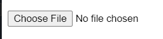
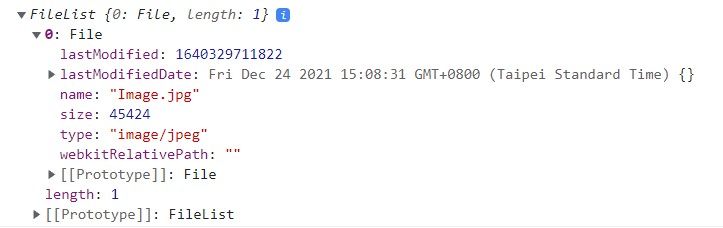
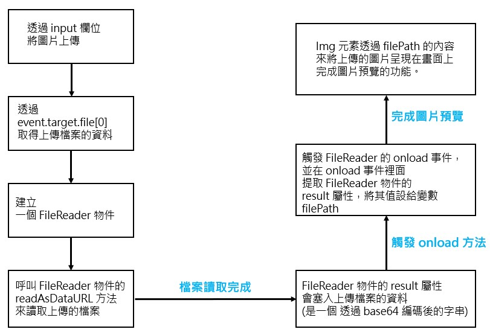

Learning Objectives
- 完成圖片預覽的功能
- 將要上傳的圖片存入 json-server 中，並呈現出來
前情提要
這一篇文章著重在紀錄如何實作圖片預覽的功能，並沒有紀錄如何將資料存到 json-server 上。
所以，在最後 Demo 的部分，只要操作上半部圖片預覽的功能即可，下半部的 post, get, delete 是筆者在練習 json-server 的功能，可以略過它 XD
上傳檔案&&圖片預覽
怎麼在瀏覽器中上傳檔案
首先，先了解在純 HTML 的狀況下，我們要怎麼做到上傳檔案這件事。
要在瀏覽器做到這件事，就需要用到 input 這個 HTML 元素。
1 | <input type="file" onchange="console.log(event.target.value)"> |
以上程式碼可以達到以下的效果

我們就可以透過以上的 Choose File 按鈕，來選擇我們想要上傳的檔案，並透過它觸發的函式，進而將檔案傳到後端。
怎麼不太常在網頁上看到原生的 input 元素來上傳檔案?
這是因為，這個原生的上傳功能的樣式很難被調整，甚至連 Choose File 這個按鈕的文字內容也沒有辦法被修改，這就是為什麼我們很少在日常的網站上看到這種原汁原味的原生上傳元件。
所以，我們會將實際上傳檔案的 input 元素隱藏，並用我們自製的 dom 來呈現我們想要的樣式。
如何得知上傳檔案的資訊呢?
那我們要怎麼知道使用者上傳的檔案的大小或者是什麼樣類型的檔案。
這時，我們可以利用 event.target.files 這個屬性值的內容，來得知以上的資訊。
1 | // --- view --- // |
最終這個監聽 change 事件的 console.log 會呈現以下的結果

會呈現剛剛上傳的檔案內容。
如何達到圖片預覽的功能?
上面的內容，我們得知了如何使用 input 來取得使用者上傳的檔案內容。
接下來，我們要完成 image-preview 的功能，也就是還沒將圖片上傳至後端之前，先讓圖片預覽在畫面中，讓使用者確認是否是他想上傳的圖片。
圖片預覽的功能主要是用 FileReader 達成，用它讀取到使用者從本機端上傳的檔案的路徑，接著再透過 FileReader 中的功能產出一個 url ，並將其設給畫面上的 img 元素的 src 屬性，來將圖片渲染再畫面上。
以下程式碼的內容，是在 Angular 框架下的寫法
寫法大概像下面這樣
1 | // --- file.component.html --- // |
以上的範例，筆者只有特別列出達成 image-preview 功能的部分，詳細的程式碼都記錄在最後的 sourceCode 裡。
首先，來解釋一下畫面的部分
有一個 input 欄位，限定只能上傳圖片類型的檔案(accept="image/*")，並綁定了一個 change 事件，若上傳檔案有變，就會觸發 change 事件綁定的 onFileSelected 事件。
這個 onFileSelected 函式最終獲得要預覽的圖片的圖片路徑，就會被存到變數 filePath 中，而 img 元素的 src 屬性會吃這個變數的內容，最終，就可以把圖片渲染到畫面上囉。
第二，解釋一下邏輯的部分
onFileSelected 函式會傳入 event 的參數，我們可以透過它的 event.target.file[0] 來取得傳入的檔案，並將它塞入變數 file 。
接著，我們宣告一個 FileReader 物件，並將它存入 reader 變數裡面。
這邊我用到幾個 FileReader 的功能
onload 它是一個非同步的函式，當上傳的圖片讀取完成之後，會觸發這個函式
readAsDataURL 這個方法專門用來讀取 Blob 或 File 型別的檔案，我們就是過它來讀取上傳的檔案。當上傳的檔案讀取完成之後，FileReader 物件的 result 屬性就會擁有 data: URL 的內容，而這個 data: URL 的資料是經過 base64 編碼後的上傳資料字串。
這邊我用一張流程圖來具現化上面 FileReader 從讀取到上傳資料到可以將圖片呈現到畫面上的流程

經過以上的兩大步驟，我們就可以達成圖片預覽的功能囉。
Conclusion
- understand how to upload file in browser.
- understand how to realize image-preview function.
Reference
Code
The Problems that I have been through
- 當發出 post request 後，會自動 reload 頁面?
Ans: 可以從這一篇文章 的 sceptomaniac 的回答可以解決這個問題，把你的 json-server 用來儲存資料的 json 跟你的專案檔案分開放在不一樣的地方，因為，筆者本來把 json-server 這個資料庫的 json 檔案放在 Angular 專案中的 assets 資料夾裡面，但是，每當筆者一發出 post 就會為這個 json 資料庫新增檔案，而 Angular 一發現專案內有檔案有更動，就會重新編譯整個專案，也就造成了重新 reload browser 的問題囉
- table 裡面的 td 欄位的 text-overflow: ellipsis 的效果出不來?
Ans: 根據這一篇文章提供的回答，要在 table cell 呈現 text-overflow 的效果，除了要在包含呈現內容的容器加上以下三種效果外
1 | table tbody td { |
還要在 td 中加上 max-width 的設定，才能出現 text-overflow 的效果喔。